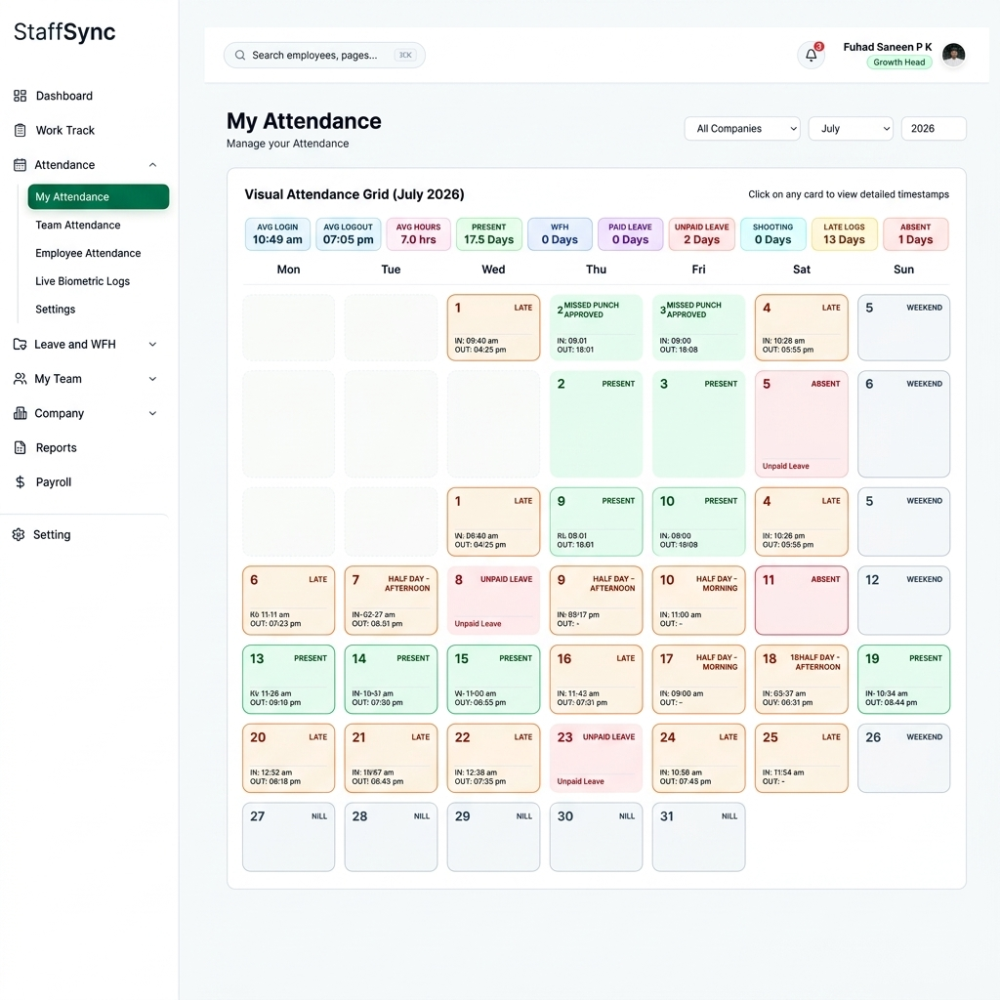
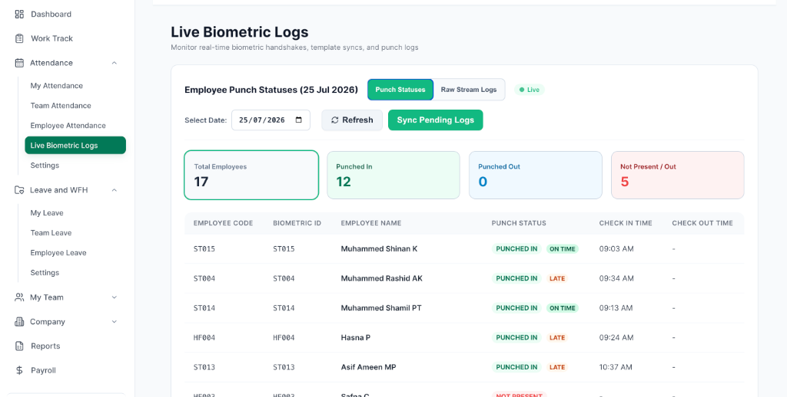
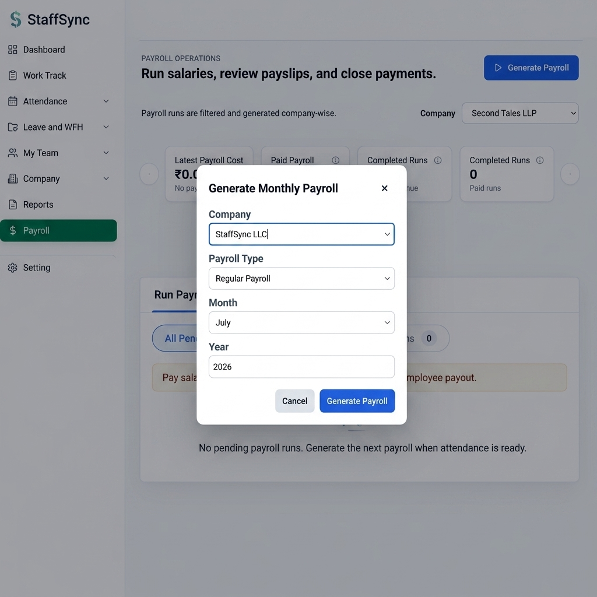
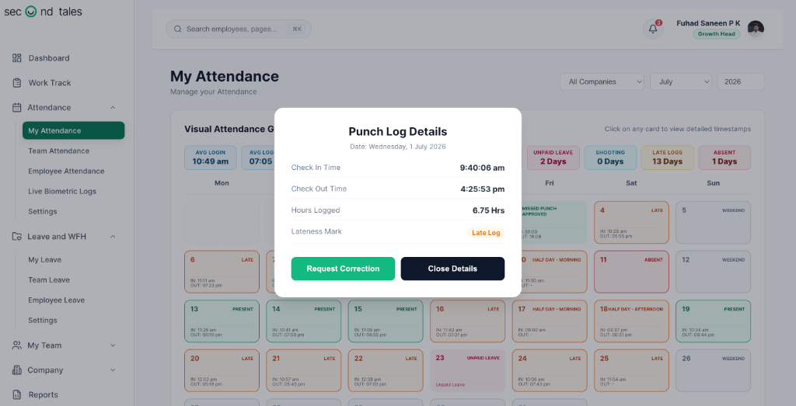

Custom EMS Platform
A secure, bespoke Employee Management System featuring staff rosters, biometric device sync, and payroll calculations.
Overview & Impact
This Custom Employee Management System (EMS) was architected as an internal SaaS tool using AI-assisted programming pipelines. The platform solves critical operational bottlenecks by establishing an automated bridge between physical office hardware and corporate database event logs.
By integrating device listener hooks with automated worker pools, employee attendance logs are parsed in real-time, feeding directly into a live tracking dashboard for managers. This is coupled with a automated payroll engine that computes hourly wages, overtime multipliers, and leave deductions instantly.
Key Scope & Features
- Real-time Biometric Integration: Listens to remote TCP/IP fingerprint and card readers, writing check-in timestamps to SQLite/PostgreSQL log databases.
- Visual Roster Calendars: Color-coded shift schedules and attendance grids mapping employee latency, leaves, and shift states.
- Automated Payroll Ledger: Automatically computes net monthly salary balances after leaves, late clock-ins, and performance point parameters.
- Administrative Controls: Actionable popups allowing managers to adjust shifts, edit timecards, and log leaves.
- Clean Security & Credentials: Role-based access levels keeping payroll records and settings restricted to administrative accounts.
Platform Interface & Screens
1. Attendance & Shift Calendar
Provides managers and employees with a color-coded calendar interface. Displays check-in/out flags, shifts status, leave deductions, and latency alerts in real-time.

2. Live Biometric Event Stream
Monitors the incoming hardware events from physical fingerprint and card biometric devices. Displays sync status, latency delays, active connection logs, and parses worker IDs dynamically.

3. Payroll Calculation Ledger
Calculates monthly salaries based on computed attendance rates, late punch-ins, overtime parameters, and tax models. Facilitates one-click payslip generation.

4. Interactive Action Modals
Allows administrators to perform roster adjustments, override biometric records, edit work points, and approve leaves on the fly.
